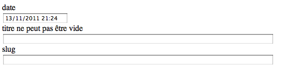

Spring MVC
Spring MVC
La gestion des billets
Nous allons construire un CRUD (Create Request Update Delete) pour les billets.
Nous commençons par créer un nouveau Controller
@Controller
public class AdminController {
}
Celui va devoir supporter les opérations suivantes :
- Liste des billets actuellement en base avec un lien "nouveau"
- Le formulaire pour un nouveau billet
- La sauvegarde du nouveau billet
- Le formulaire pour l'édition d'un billet
- La sauvegarde d'une billet
- La suppression d'un billet
La liste des billets
Ecrire une méthode qui réponde sur /admin/posts qui injecte la totalité des billets dans le modèle.
Cette méthode doit ensuite rediriger vers la vue /WEB-INF/jsp/admin/posts.jsp/
En s'inspirant de la page d'index, écrire le fichier jsp en le remplissant avec la liste des titres des billets.
Le lien sur le titre du billet doit pointer vers /admin/post/{id du billet}.
Un lien en haut de la jsp doit pointer vers /admin/post avec un texte "nouveau".
Un nouveau billet
On ajoute une méthode au Controller pour la création d'un nouveau billet.
@RequestMapping("/admin/post")
public String post(Model model) {
// on injecte un Post vierge dans le modèle
model.addAttribute("post", new Post());
return "admin/post";
}
La vue est un formulaire qui permet d'éditer les attributs du billet.
On y trouve l'appel à la taglib de spring pour les formulaires.
<%@ taglib prefix="form" uri="http://www.springframework.org/tags/form" %>
Le formulaire qui reprend le nom du bean dans le modèle, l'url cible et la méthode HTTP.
<form:form commandName="post" action="/admin/post" method="post">
Un champs input est facile à définir.
<form:input path="title" />
Avec un zone prévue pour afficher les messages d'erreurs.
<form:errors path="title" />
En attendant le HTML 5 (et encore, cela ne sera pas fantastique), les inputs html sont un peu limités.
Les formulaires spring sont extrêmement proche des formulaires html standards.
La gestion du POST
Coté jsp, tout est en place. Il reste a gérer la réception des données coté serveur.
Le mapping suivant permet de recevoir l'appel.
@RequestMapping(value = "/admin/post", method = RequestMethod.POST)
public String post(@ModelAttribute("post") Post post, BindingResult bindingResult, Model model) {
...
}
En recevant l'appel, spring va "binder" le contenu de la requête http à notre objet.
BindingResult contient toutes les erreurs de validation. C'est ce qui permet l'affichage des erreurs dans la jsp.
Le minimum vital pour notre billet est le titre. On fait donc une vérification et on sauve le billet en base.
if (StringUtils.isEmpty(post.getTitle())) {
bindingResult.rejectValue("title", "field.empty", "Le titre est obligatoire");
return "admin/post";
}
postService.save(post);
return "redirect:/admin/posts";
StringUtils vient de la librairie commons lang qu'il faut ajouter au pom si il n'est pas déjà présent.
<dependency>
<groupId>commons-lang</groupId>
<artifactId>commons-lang</artifactId>
<version>2.6</version>
<scope>compile</scope>
</dependency>
Si on tente de sauvegarder un billet en l'état avec une date, nous avons un message d'erreur nous indiquant que spring ne parvient pas a convertir une chaîne de caractères en date.
Failed to convert property value of type java.lang.String to required type java.util.Date for property date; nested exception is org.springframework.core.convert.ConversionFailedException: Unable to convert value "" from type java.lang.String to type java.util.Date; nested exception is java.lang.IllegalArgumentException
En effet spring n'adopte pas de convention par défaut et ne sait pas quel est le format littéral d'une date.
Il faut alors configurer le binder dans notre Controller.
@InitBinder
public void binder(WebDataBinder binder) {
SimpleDateFormat sdf = new SimpleDateFormat("dd/MM/yyyy HH:mm");
binder.registerCustomEditor(Date.class, new CustomDateEditor(sdf, true));
}
Le format de date est donc "dd/MM/yyyy HH:mm" et il est possible d'avoir une date vide.
Désormais, la sauvegarde fonctionne.
Afin de nous simplifier l'édition, on peut d'ailleurs initialiser le champs date à la date courante dans le modèle.
@Column @Temporal(TemporalType.TIMESTAMP) private Date date = new Date();
L'édition
A ce point, l'édition d'un billet est simple. Il faut ajouter le mapping dans le Controller.
@RequestMapping("/admin/post/{id}")
public String post(@PathVariable Long id, Model model) {
// on injecte le post
model.addAttribute("post", postService.findById(id));
return "admin/post";
}
Il faut créer la méthode findById dans le service afin que ce code fonctionne.
Dans le cas de l'édition d'un billet, on utilise le même formulaire.
Il faut juste rajouter le champs id afin que le celui-ci soit renvoyé au moment du post du formulaire.
<form:hidden path="id" />
Un dernier point : la méthode save de PostServiceImpl fait un session.save(post). Cela crée un nouvel enregistrement en base même si le billet a un déjà un id.
On remplace session.save(post) par session.saveOrUpdate(post) et l'édition de billet fonctionne.
La suppression
Rajouter un mapping sur /admin/post/{id}/delete qui supprime un post.
Ajouter un lien pour chaque billet dans le listing.
Un peu d'ordre
En jouant avec l'édition des billets, on observe qu'ils ne sont pas classés par date.
Cela se corrige simplement en ajoutant une clause order dans la méthode find du service :
criteria.addOrder(Order.desc("date"));
Les billets les plus récents sont en premier.
JSR 303
Nous avons effectué la validation dans le Controller.
Cette possibilité est simple mais deviendrait dense si il fallait valider beaucoup de champs.
Nous allons maintenant utiliser une technique beaucoup plus concise : la JSR 303 (spécification bean validation).
Tout d'abord, il faut importer une librairie d'implémentation de la spécification.
<!-- hibernate validator -->
<dependency>
<groupId>org.hibernate</groupId>
<artifactId>hibernate-validator</artifactId>
<version>4.2.0.Final</version>
<scope>compile</scope>
</dependency>
Hibernate validator est l'implémentation de référence.
Nous pouvons alors modifier l'AdminController
@RequestMapping(value = "/admin/post", method = RequestMethod.POST)
public String post(@ModelAttribute("post") @Valid Post post, BindingResult bindingResult, Model model) {
if (StringUtils.isEmpty(post.getTitle())) {
bindingResult.rejectValue("title", "field.empty", "Le titre est obligatoire");
return "admin/post";
}
if (bindingResult.hasErrors()) {
return "admin/post";
}
postService.save(post);
return "redirect:/admin/posts";
}
L'annotation @Valid indique a spring qu'il doit exécuter un validateur sur l'attribut.
Il nous suffit alors d'annoter le champs title de la class Post :
@Column @NotEmpty private String title;
En tant qu'implémentation de la JSR 303, hibernate validator vient avec la prise en charge des annotations et un jeu de messages d'erreur localisé.
Il est maintenant très simple de rajouter d'autres @NotEmpty ou bien @Length ou @Email.
Il est même possible d'écrire ses propres annotations afin de rendre réutilisable simplement ses éléments de validation.
En peu de recul
L'utilisation des Controllers est simple mais il nous a fallu bien des librairies et quelques fichiers de configuration pour arriver à ce résultat.
Dans le cadre d'un projet maven + spring mvc, obtenir sa première page n'est pas instantané.
D'autres frameworks (rails, grails, roo, play...) offrent un démarrage rapide et beaucoup de vitesse pour les besoins classiques (le CRUD est un des exemples courants)
Spring mvc de son coté est un peu plus lourd à manipuler mais est d'une très grande flexibilité.
Selon les projets, on peut donc choisir la technologie la plus adaptée.
Le reste
Il resterait beaucoup a faire afin d'avoir une application complète.
Voici quelques pistes / questions pour la suite :
- La page d'index est /index. Comment pourrait on faire pour que / réponde également comme page d'index ?
- Comment devrait on gérer la pagination ? Quelle ergonomie dans la page ? Quelles modifications dans le service ?
- Comment pourrait on gérer convenablement le bloc de tag ?
- Comment lister les billets par tags (et donc pour mettre des liens sur les tags) ?
- Comment faire fonctionner le bloc des derniers billets ?
- La gestion des auteurs est un élément délicat. Comment gérer la relation @ManyToOne dans le formulaire d'édition ? Comment gérer cela dans le controller et le service ?
- La gestion des cas d'erreur : que faire de http://localhost:8080/billet/not-existing-post ou bien http://localhost:8080/admin/post/aaa ?
- Si notre blog devait supporter beaucoup de trafic, que pourrait on faire pour l'aider à tenir la charge ?